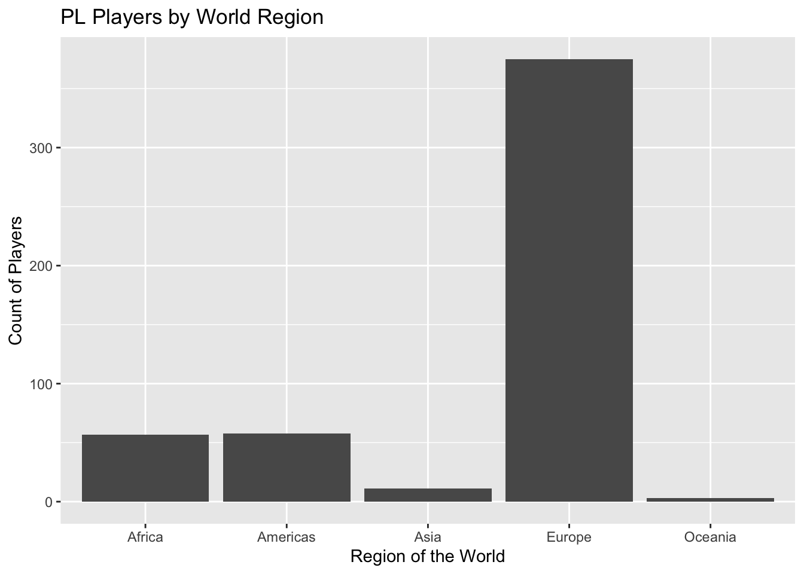

Project Report: Performance Analysis of Premier League 2018-19
Introduction
Premier League
As the most popular football league worldwide, the Premier League consists of 20 competitive football clubs in England and attracts some of the most talented football players. Each season lasts from August to June, with each team playing 38 matches against all other teams (home and away). Final standings is determined by points earned throughout the season, with 3 points for each win, 1 point for each draw, and 0 point for each loss.
Motivation
Statistical inference is commonly used as part of sporting analysis
to help the clubs to achieve better game performance. Data scientists
can use past data to build models and predict future performance.
For our final project, we intend to explore the factors that affect game
performance. We utilized the datasets on the Premier League season
2018/19 because it was the season before pandemic and due to data
availability. We are interested in the factors with significant effect
on the goal difference (number of goals scored minus goals conceded) for
each team by the end of the season so that we might be able to predict
team performance for future seasons. Factors including average age of
the squad, nationality of the players, possession rate, types of ball
passes, number of yellow cards received, and money spent in the transfer
window are being explored with our data exploration process and existing
scientific studies.
Initial Questions
What represents a club’s success?
What factors can influence the performance of a football club?
Will different match styles have significant differences in club performance?
What impact does the club’s economic situation have on performance?
Data Sources and Manipulation
Source 1: Match Statistic Summary
The dataset of match
statistics was downloaded and read in. It includes different
measures of game statistics for 20 teams in Premier League of season
2018-19. Our intended outcome value is
general_goal_difference, which is measured by the goal
scored minus goal conceded. Variables of measure include basic
information about the squad, total fouls received, goal stats, attack
stats, defense stats, possession rate, and TV revenue. We selected the
variables of interest: general_goal_difference,
general_squad_average_age, attack_posession,
attack_pass_accuracy, general_card_yellow.
Teams are ordered by the final league position, from 1 to 20. It can
be observed that higher ranked teams have positive goal difference,
while lower ranked teams have negative goal difference. The separation
between positive and negative goal difference happens about rank 10 so
that we decide general_goal_difference is an accurate
representation of the team performance outcome.
match_df = read_csv("./data/match_data.csv")|>
janitor::clean_names() |>
select(team, general_won, general_league_position, general_goal_difference, general_squad_average_age, attack_posession,
attack_passes_back, attack_passes_long, general_card_yellow)
match_df |>
knitr::kable()| team | general_won | general_league_position | general_goal_difference | general_squad_average_age | attack_posession | attack_passes_back | attack_passes_long | general_card_yellow |
|---|---|---|---|---|---|---|---|---|
| Manchester City | 32 | 1 | 72 | 27.1 | 64.0 | 4240 | 1814 | 44 |
| Liverpool | 30 | 2 | 67 | 26.8 | 58.8 | 3416 | 2250 | 38 |
| Chelsea | 21 | 3 | 24 | 28.1 | 59.9 | 3874 | 1774 | 49 |
| Tottenham | 23 | 4 | 28 | 27.0 | 56.7 | 3191 | 2267 | 56 |
| Arsenal | 21 | 5 | 22 | 27.5 | 56.1 | 3102 | 2062 | 72 |
| Manchester United | 19 | 6 | 11 | 27.3 | 53.3 | 2634 | 2242 | 73 |
| Wolverhampton | 16 | 7 | 1 | 27.2 | 47.4 | 2515 | 2552 | 72 |
| Everton | 15 | 8 | 8 | 27.0 | 51.0 | 2362 | 2310 | 55 |
| Leicester | 15 | 9 | 3 | 29.0 | 50.8 | 2593 | 2335 | 57 |
| West Ham | 15 | 10 | -3 | 28.3 | 49.0 | 2273 | 2315 | 59 |
| Watford | 14 | 11 | -7 | 26.8 | 47.4 | 2314 | 2437 | 77 |
| Crystal Palace | 14 | 12 | -2 | 26.8 | 46.6 | 2233 | 2259 | 58 |
| Newcastle | 12 | 13 | -6 | 26.1 | 42.9 | 1999 | 2680 | 57 |
| Bournemouth | 13 | 14 | -14 | 26.2 | 47.7 | 2249 | 1932 | 60 |
| Burnley | 11 | 15 | -23 | 27.3 | 43.4 | 2046 | 2898 | 75 |
| Southampton | 9 | 16 | -20 | 28.0 | 45.4 | 2040 | 2394 | 71 |
| Brighton | 9 | 17 | -25 | 28.4 | 44.1 | 2072 | 2623 | 60 |
| Cardiff | 10 | 18 | -35 | 29.7 | 39.1 | 1418 | 2513 | 66 |
| Fulham | 7 | 19 | -47 | 26.7 | 49.2 | 2750 | 2417 | 68 |
| Huddersfield | 3 | 20 | -54 | 28.5 | 47.1 | 2492 | 2603 | 55 |
Source 2: Player Statistic (Age)
The dataset of player
statistics was extracted and read in. Variables of interest were
selected, including player’s nation, team, age, and total minutes played
during the season. Team names were modified so that they match with
match_df, preparing for further datasets merging. Below
shows a couple player entries.
player_df = read_excel("./data/player_game.xlsx", sheet = 1) |>
janitor::clean_names()|>
rename(team = squad)|>
select(player, nation, team, age)
player_df$team = gsub("Manchester Utd", "Manchester United", player_df$team)
player_df$team = gsub("Newcastle Utd", "Newcastle", player_df$team)
player_df$team = gsub("Wolves", "Wolverhampton", player_df$team)
player_df$team = gsub("Cardiff City", "Cardiff", player_df$team)
player_df$team = gsub("Leicester City", "Leicester", player_df$team)
player_df |>
head(5) |>
knitr::kable() | player | nation | team | age |
|---|---|---|---|
| Patrick van Aanholt | nl NED | Crystal Palace | 27 |
| Sergio Agüero | ar ARG | Manchester City | 30 |
| Nathan Aké | nl NED | Bournemouth | 23 |
| Marc Albrighton | eng ENG | Leicester | 28 |
| Toby Alderweireld | be BEL | Tottenham | 29 |
Using player_df, we changed the age
variable to number so that we could calculate the 25th and 75th
percentile of age distribution, which is 23 and 29 years old. Then we
calculated the proportion of players that belong to the age range of 23
to 29 years old, grouped by 20 different teams. We merged the
ave_age_proportion variable into match_df
using left_join. Below shows the result for the top 5
teams.
age_player_df = player_df |>
mutate(age = as.numeric(as.character(age))) |>
na.omit()
q25 <- quantile(age_player_df$age, 0.25)
q75 <- quantile(age_player_df$age, 0.75)
proportion_age_23_29 <- age_player_df |>
group_by(team) |>
summarise(
total = n(),
count_23_29 = sum(age >= 23 & age <= 29)) |>
mutate(proportion = count_23_29 / total)
match_df = match_df |>
left_join(proportion_age_23_29, by = "team") |>
select(-total, -count_23_29) |>
rename(ave_age_proportion=proportion)
match_df|>
head(5) |>
knitr::kable()| team | general_won | general_league_position | general_goal_difference | general_squad_average_age | attack_posession | attack_passes_back | attack_passes_long | general_card_yellow | ave_age_proportion |
|---|---|---|---|---|---|---|---|---|---|
| Manchester City | 32 | 1 | 72 | 27.1 | 64.0 | 4240 | 1814 | 44 | 0.5714286 |
| Liverpool | 30 | 2 | 67 | 26.8 | 58.8 | 3416 | 2250 | 38 | 0.7826087 |
| Chelsea | 21 | 3 | 24 | 28.1 | 59.9 | 3874 | 1774 | 49 | 0.5833333 |
| Tottenham | 23 | 4 | 28 | 27.0 | 56.7 | 3191 | 2267 | 56 | 0.5714286 |
| Arsenal | 21 | 5 | 22 | 27.5 | 56.1 | 3102 | 2062 | 72 | 0.5000000 |
Source 3: Player Statistic (Country, Region)
player_df has variable country, which is
where each player comes from. Dataset of country
codes was downloaded and read in. country_code_df is
manipulated so that Great Britain is separated into
ENG, NIR, SCO, WAL. Variables include the country name,
country code, and the region that country belongs to. Below shows 5
entries of cleaned country_code_df.
country_code_df = read.csv("./data/country_codes.csv") |>
janitor::clean_names() |>
rename(country = fifa)
GBR_df = country_code_df |>
filter(country == "ENG,NIR,SCO,WAL")
GBR_df = data.frame(country = unlist(strsplit(as.character(GBR_df$country), ",")),
official_name_en = GBR_df$official_name_en,
region_name = GBR_df$region_name)
country_code_df = country_code_df |>
select(country, official_name_en, region_name) |>
bind_rows(GBR_df)
country_code_df|>
head(5) |>
knitr::kable()| country | official_name_en | region_name |
|---|---|---|
| TPE | ||
| AFG | Afghanistan | Asia |
| ALB | Albania | Europe |
| ALG | Algeria | Africa |
| ASA | American Samoa | Oceania |
player_df is manipulated so that country origin for each
player is saved as a variable. Then the dataset is merged with
country_code_df and each player has a new variable
indicating the region he comes from. Then the proportion of European
players is calculated for each team and the variable
europe_player_proportion is added to match_df
by merging the datasets. Below shows the result of the dataframe for the
top 5 teams.
player_dist = player_df |>
separate(nation, into = c("country_abbre", "country"), convert = TRUE) |>
select(country, player, team) |>
left_join(x = _, y = country_code_df) |>
drop_na()
player_dist$team <- factor(player_dist$team, levels = unique(player_dist$team),
labels = c("Manchester City", "Liverpool", "Chelsea", "Tottenham", "Arsenal", "Manchester United",
"Wolverhampton", "Everton", "Leicester", "West Ham", "Watford", "Crystal Palace",
"Newcastle", "Bournemouth", "Burnley", "Southampton", "Brighton", "Cardiff", "Fulham",
"Huddersfield"))
player_region = player_dist |>
group_by(team) |>
summarise(
total = n())
player_europe = player_dist |>
filter(region_name == "Europe") |>
group_by(team) |>
summarise(
n_europe = n()) |>
left_join(x = _, y = player_region) |>
mutate(proportion = n_europe/total)
match_df = match_df |>
left_join(player_europe, by = "team") |>
select(-total, -n_europe) |>
rename(europe_player_proportion = proportion)
match_df|>
head(5) |>
knitr::kable()| team | general_won | general_league_position | general_goal_difference | general_squad_average_age | attack_posession | attack_passes_back | attack_passes_long | general_card_yellow | ave_age_proportion | europe_player_proportion |
|---|---|---|---|---|---|---|---|---|---|---|
| Manchester City | 32 | 1 | 72 | 27.1 | 64.0 | 4240 | 1814 | 44 | 0.5714286 | 0.7307692 |
| Liverpool | 30 | 2 | 67 | 26.8 | 58.8 | 3416 | 2250 | 38 | 0.7826087 | 0.6666667 |
| Chelsea | 21 | 3 | 24 | 28.1 | 59.9 | 3874 | 1774 | 49 | 0.5833333 | 0.9285714 |
| Tottenham | 23 | 4 | 28 | 27.0 | 56.7 | 3191 | 2267 | 56 | 0.5714286 | 0.6000000 |
| Arsenal | 21 | 5 | 22 | 27.5 | 56.1 | 3102 | 2062 | 72 | 0.5000000 | 0.6785714 |
Source 4: Transfer Market Spending
The dataset of spending
in the transfer market is downloaded and read in.
transfer_df includes variables indicating net spending for
each year from 2009 to 2019, and the total net spending over the past
decade. We are interested in exploring the relationship between total
net spending and team performance so these two variables are selected
and merged into match_df for analysis. Below shows the
result of our final cleaned match_df for top 5 teams.
transfer_df = read_csv("./data/transfer.csv")|>
janitor::clean_names()
transfer_df$team <- factor(transfer_df$team, levels = unique(transfer_df$team),
labels = c("Manchester City", "Liverpool", "Chelsea", "Tottenham", "Arsenal", "Manchester United",
"Wolverhampton", "Everton", "Leicester", "West Ham", "Watford", "Crystal Palace",
"Newcastle", "Bournemouth", "Burnley", "Southampton", "Brighton", "Cardiff", "Fulham",
"Huddersfield"))
transfer_df = transfer_df |>
select(team, total)
match_df = match_df |>
left_join(transfer_df, by = "team")
match_df|>
head(5) |>
knitr::kable()| team | general_won | general_league_position | general_goal_difference | general_squad_average_age | attack_posession | attack_passes_back | attack_passes_long | general_card_yellow | ave_age_proportion | europe_player_proportion | total |
|---|---|---|---|---|---|---|---|---|---|---|---|
| Manchester City | 32 | 1 | 72 | 27.1 | 64.0 | 4240 | 1814 | 44 | 0.5714286 | 0.7307692 | -1070.83 |
| Liverpool | 30 | 2 | 67 | 26.8 | 58.8 | 3416 | 2250 | 38 | 0.7826087 | 0.6666667 | -666.55 |
| Chelsea | 21 | 3 | 24 | 28.1 | 59.9 | 3874 | 1774 | 49 | 0.5833333 | 0.9285714 | -16.78 |
| Tottenham | 23 | 4 | 28 | 27.0 | 56.7 | 3191 | 2267 | 56 | 0.5714286 | 0.6000000 | -324.86 |
| Arsenal | 21 | 5 | 22 | 27.5 | 56.1 | 3102 | 2062 | 72 | 0.5000000 | 0.6785714 | -560.93 |
Exploratory Analysis
Player Distribution
Player Distribution by Region
player_dist |>
ggplot() + geom_bar(aes(x = region_name)) +
labs(title = "PL Players by World Region",
x = "Region of the World",
y = "Count of Players")+
scale_fill_viridis_d(option = "viridis")
The bar plot shows the distribution of Premier League football players origin, with categories of 5 regions of the world. From the plot, it can be observed that most of the players are from Europe. Since Premier League takes place in England, which is part of Europe, there might be an association between players origin and performance in the club.
Player Distribution of 20 Teams
player_dist |>
count(region_name, team) |>
plot_ly(data = _,
x = ~ team,
y = ~ n,
color = ~ region_name,
colors = "Set2") |>
add_markers(text = ~paste0('Football Club: ', team,
'</br>World Region: ', region_name,
'<br>Number in region: ', n),
hoverinfo = "text") |>
layout(showlegend = TRUE,
title = "Player Distribution by Football Club",
xaxis = list(title = "FC"),
yaxis = list(title = "Number of Player by World Region"))We further look at the distribution of player origin of the 20 teams. Using this plot, we can visualize how proportion of players by region origin change from team to team, ordered by the final rank by the end of the season. In the Premier League, there is a law regarding the limit of players without an European nationality. Thus, we intend to explore the relationship between proportion of non-European players and performance of the club.
Tactic: Match Style of Play
Possession Rate
possession_plot = match_df |>
plot_ly(data = _, x = ~ attack_posession, y = ~ general_goal_difference,
type = 'scatter', mode = 'markers', text = ~team,
marker = list(size = 10, color = ~ general_goal_difference,
colorbar = list(title = 'Goal Difference'),
colorscale = 'turbo')) |>
layout(title = 'Goal Difference vs. Match Style',
xaxis = list(title = 'Possession Rate'),
yaxis = list(title = 'Goal Difference'))
possession_plotlm(general_goal_difference ~ attack_posession, data = match_df) |>
broom::tidy() |>
knitr::kable(digits = 3)| term | estimate | std.error | statistic | p.value |
|---|---|---|---|---|
| (Intercept) | -210.937 | 33.336 | -6.328 | 0 |
| attack_posession | 4.219 | 0.662 | 6.376 | 0 |
The scatter plot shows the relationship between possession rate and goal difference. We can observe that teams with a higher attack possession percentage tend to have more goal scored than conceded, indicating a potential correlation between controlling the game and league success.
Long Pass vs. Short Pass
pass_plot = match_df |>
plot_ly(data = _ , x = ~ attack_passes_long, y = ~ attack_passes_back,
type = 'scatter', mode = 'markers',
text = ~paste(team, general_goal_difference),
marker = list(size = ~ general_won, color = ~ general_goal_difference,
colorbar = list(title = 'Goal Difference'),
colorscale = 'turbo')) |>
layout(title = 'Long Pass vs Short Pass',
xaxis = list(title = 'Long Pass'),
yaxis = list(title = 'Short Pass'))
pass_plotThis plot compares the number of long passes to short passes for each team, with the size of each point representing the number of games won and the color gradient representing general goal difference. We can observe that teams that score more goals tend to have more short passes while teams that score less goals tend to have more long passes. Passing style greatly defines match tactic, with short pass indicating better ball control and cooperation among the team. We find it interesting to examine team tactics through match data.
Fouls Received: Yellow Card Count
match_df$team <- factor(match_df$team, levels = unique(match_df$team),
labels = c("Manchester City", "Liverpool", "Chelsea", "Tottenham", "Arsenal", "Manchester United",
"Wolverhampton", "Everton", "Leicester", "West Ham", "Watford", "Crystal Palace",
"Newcastle", "Bournemouth", "Burnley", "Southampton", "Brighton", "Cardiff", "Fulham",
"Huddersfield"))
yellowcard_plot = plot_ly(match_df,
x = ~ team,
y = ~ general_card_yellow,
type = "bar",
color = ~ team,
colors = 'viridis') |>
layout(yaxis = list(title = 'Total Yellow Card Received'),
xaxis = list(title = 'Team'),
title = 'Total Yellow Card Received by Team')
yellowcard_plotYellow card is given when certain types of foul happens between two players from opposite teams. Foul is used as a tactics during the match to stop the opposite from attacking and regain possession of the ball. The plot shows the total number of yellow card received by each team, ordered by the final league position. It can be observed that lower ranked teams tend to receive more yellow cards. One explanation is that conducting fouls is the tactic they use to take back ball control. Therefore, we are interested to see if there is an association between yellow cards received and team performance.
Club Support: Total Spending
Transfer windows opens twice a year, which is when football clubs trade players with each other. Economic support from clubs can be decisive in bidding talented players and bringing them to the club. Net spending is calculated by the money spent from buying players minus the money received from selling players.
spending_plot = plot_ly(transfer_df,
x = ~team,
y = ~ -total,
type = "bar",
color = ~team,
colors = 'viridis') |>
layout(yaxis = list(title = 'Total Spending (in Millions)'),
xaxis = list(title = 'Team'),
title = 'Transfer Market Total Spending in Recent Decade')
spending_plotThis histogram shows the net total amount of money spent by the different teams on transfers from 2009 to 2019. We can observe that Manchester City, Liverpool and Arsenal are 3 teams with significant spending in the transfer market over the past decade. Comparing the net spending across the teams, ordered by final rank of the season, it can be seen that generally more spending leads to a better position in Premier League at the end. One outlier is Chelsea Football Club, who may have earned a considerable amount of money by selling players from the Academy (raised by the club).
Regression Analysis
Linear Models
Full Model
Given previous exploration of the datasets and existing scientific studies on the factors that could potentially affect sport performance, a regression model is fitted to see if any variable has a significant impact on team performance.
A full regression model is fitted with the following components:
Outcome:
general_goal_differencerepresents team performance, which is goal scored minus goal concededPredictor:
general_squad_average_ageis the average age of all players of the teamPredictor:
ave_age_proportionis the proportion of players aged 23 to 29 years old in the teamPredictor:
europe_player_proportionis the proportion of players with an European origin in the teamPredictor:
attack_posessionis the ball possession rate of the teamPredictor:
attack_passes_backis the number of short passes done during attackPredictor:
general_card_yellowis the number of yellow cards received by the team over the seasonPredictor:
totalis the total net spending in transfer market over the past decade
match_df = match_df |>
mutate(ave_age_proportion = ave_age_proportion*100,
europe_player_proportion = europe_player_proportion*100,
total = -total)
model_full = match_df |>
lm(general_goal_difference ~ general_squad_average_age + ave_age_proportion + europe_player_proportion
+ attack_posession + attack_passes_back + general_card_yellow + total, data = _ ) |>
broom::tidy()
knitr::kable(model_full, digits=3)| term | estimate | std.error | statistic | p.value |
|---|---|---|---|---|
| (Intercept) | -144.135 | 178.592 | -0.807 | 0.435 |
| general_squad_average_age | -2.954 | 4.463 | -0.662 | 0.521 |
| ave_age_proportion | 0.204 | 0.389 | 0.525 | 0.609 |
| europe_player_proportion | -0.050 | 0.491 | -0.103 | 0.920 |
| attack_posession | 6.345 | 2.771 | 2.290 | 0.041 |
| attack_passes_back | -0.034 | 0.025 | -1.377 | 0.194 |
| general_card_yellow | -0.363 | 0.483 | -0.752 | 0.467 |
| total | 0.039 | 0.024 | 1.597 | 0.136 |
Looking at the linear model result, attack_posession has
an estimate of 6.345 and a p value of
0.041, indicating that it is a significant factor in
terms of team performance. In fact, there is a positive correlation
between ball possession rate and goal difference. Besides possession
rate, the p value of other variables are all greater than 0.05, which
means that the relationship between those variables and the outcome is
not statistically significant. Nevertheless, we are still able to read
pattern from the result. total has the second smallest p
value of 0.136 and a positive coefficient estimate,
indicating that economic support from the club is indeed positively
associated with club performance.
Tactic Model
After evaluating the full model with all the variables of interest, it seems that game tactics have the most significant effect on team performance. We decide that it would be interesting to create another linear regression model focusing only on variables representing tactic statistics and compare it with the full model above.
Outcome:
general_goal_differencerepresents team performance, which is goal scored minus goal concededPredictor:
attack_posessionis the ball possession rate of the teamPredictor:
attack_passes_backis the number of short passes done during attack
tactic_model = match_df |>
lm(general_goal_difference ~ attack_posession + attack_passes_back, data = _)|>
broom::tidy()
knitr::kable(tactic_model, digits=3)| term | estimate | std.error | statistic | p.value |
|---|---|---|---|---|
| (Intercept) | -285.739 | 68.497 | -4.172 | 0.001 |
| attack_posession | 7.237 | 2.511 | 2.882 | 0.010 |
| attack_passes_back | -0.029 | 0.024 | -1.244 | 0.230 |
Looking at the regression model results,
attack_possession has an even smaller p value of
0.01, indicating that that statistical correlation
between it and the outcome is stronger in our tactic model.
Cross Validation
With one general full linear model and one tactic specific linear
model, it would be interesting to compare rmse of the
predicted general_goal_difference between the two by using
cross validation. Below shows the result of rmse
distribution of the two models.
cv_df =
crossv_mc(match_df, 100) |>
mutate(
train = map(train, as_tibble),
test = map(test, as_tibble))
cv_df =
cv_df |>
mutate(
full_mod = map(train, \(df) lm(general_goal_difference ~ general_squad_average_age + ave_age_proportion +
europe_player_proportion + attack_posession + attack_passes_back +
general_card_yellow + total, data = df)),
tactic_mod = map(train, \(df) lm(general_goal_difference ~ attack_posession + attack_passes_back, data = df)))|>
mutate(
rmse_full_model = map2_dbl(full_mod, test, \(mod, df) rmse(model = mod, data = df)),
rmse_tactic_model = map2_dbl(tactic_mod, test, \(mod, df) rmse(model = mod, data = df)))
cv_df |>
select(starts_with("rmse")) |>
pivot_longer(
everything(),
names_to = "model",
values_to = "rmse",
names_prefix = "rmse_") |>
mutate(model = fct_inorder(model)) |>
ggplot(aes(x = model, y = rmse)) + geom_boxplot() +
geom_boxplot(color = c("#ADD8E6")) +
labs(
title = "Root Mean Squared Errors Distributions for Match Performance",
x = "Fitted Model",
y = "RMSE") +
theme(axis.line = element_line(color = "grey"),
panel.background = element_blank(),
legend.position = "none",
panel.grid.major = element_line(color = "light grey", linetype = "dashed"),
plot.title = element_text(hjust = 0.5))
Discussion
Inspired by our passion in football, we aimed to conduct a performance analysis to find out factors significantly impacting game results. We are particularly interested in Premier League, which is now the most competitive and most advertised football league in the world. We started off by finding existing scientific studies about our research interest. We found that age of the players, tactical approach and financial spending are proven to have an effect on match result. Thus, these three factors are included as variables of exploration. To make further explorations, we downloaded and read in datasets on Premier League Season 2018-19, including statistics on match, player, and club spending.
Premier League has policy regarding the limit of non-European players and we found that indeed most players have an European nationality so that we expect European players are more skillful or talented in football compared to others. Besides players, tactics and strategies are the most important in team sports. Scatterplots were created to visualize how ball possession rate, types of ball passes on the pitch, and strategic fouls vary between the teams. We found that higher ranked teams generally have higher possession rate, more short passes compared to long passes, and less yellow cards resulting from fouls. Moreover, football is the sport that generates the most profit and market value of talented players can be hundreds of millions dollars. Financial support from the club is decisive during transfer window, allowing the club to invest and buy players to strengthen the team. In fact, we found that higher ranked teams tend to have a higher net spending over the past decade in transfer market.
With all the exploratory analysis conducted, we hypothesized that average age of the squad, nationality of the squad, tactic approach, total yellow cards received from fouls, and money spent during transfer window are associated with performance outcome measured by goal difference by the end of the season.
Regression Results
To test our hypothesis, we fitted a full linear model regressing
general_goal_difference on 7 predictors. Results of the
full linear model revealed a significant relationship between
attack_possession and the outcome, as indicated by a p
value below 0.05. Other predictors, however, did not demonstrate
statistical significance at significance level of 0.05. Thus, we can
observe that tactical approach has much stronger impact compared to
other factors. We then fitted a simplified linear model regressing
general_goal_difference only on factors related to tactics.
We found that the tactic model also highlighted attack possession as a
significant factor. However, types of passes did not show significance
in this model.
Using cross validation, we assessed prediction accuracy of the
prediction models by looking at the boxplots of rmse
distribution. We found that tactic model generally has a lower
rmse compared to the full model. The results show that the
tactic model potentially provides a more accurate and consistent
prediction for general_goal_difference, as the
attack_possession emerged as a pivotal predictor in both
models, aligning with our prediction that match style with
primary focus on ball possession is a key factor in match
outcomes.
Even though our model only shows attack_possession as a
significant factor, we definitely acknowledge the importance of other
factors that may failed to be represented in our model. For example,
differences between individual players and even off-field factors can
cause considerable disparities. This could involve integrating
interaction terms or additional predictors to more accurately reflect
the complexities inherent in football club performance. More complicated
model is needed to conduct a more detailed analysis.
Challenges
When we analyze Premier League data, some of the challenges tend to revolve around data availability, merging data from different sources, and encountering unexpected models and results. Data availability can be a big issue, especially when we are looking for specific, detailed statistics or historical data, as not all the desired information is publicly available or consistently recorded. Merging data is a key step in a comprehensive analysis, but it also introduces complications such as adjusting for different formats and scales using different data sources. This time-consuming process often reveals discrepancies that must be carefully resolved to ensure the completeness of the data. In Moreover, the initial model created for analysis may produce unexpected or counterintuitive results. These results can stem from a variety of factors such as data quality issues, poor model selection, omission of variables, or misinterpretation of complex dynamics in sports data. Each of these challenges requires careful consideration and an R approach to ensure the reliability and validity of the analysis.